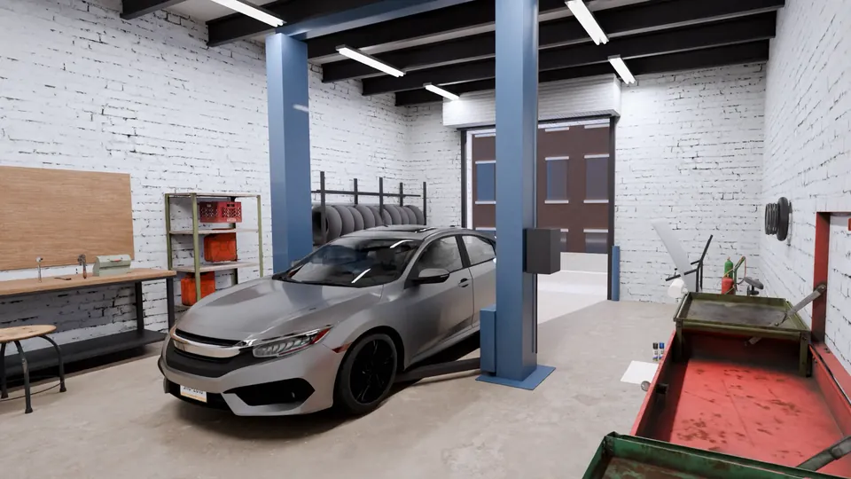

For the owner
How this sitefills your bays.
In plain words: six ways it turns people searching on their phone into calls, estimate requests and booked cars in your bays.
No numbers, no promises: what it does, and why that helps.

- 01
Booked cars, not empty bays
'Book a service' sits on every screen: the car, the service and a day. Bookings reach you by text or in your booking system, so slow days can fill up ahead.
- 02
Body jobs from a photo
After a scrape or a dent, people want a price before they drive over. 'Send a photo' lets them ask from the parking lot, and you see the damage before you answer.
- 03
Calls from people with a problem now
A strange noise, a warning light, a flat: Call is one tap away with your Google rating next to it, so the driver who needs help today reaches you, not the next shop.
- 04
Easy to find, easy to pull in
Hours, 'open now', the map and Directions on every screen, plus where to pull in for drop-off. People searching nearby see your bay door, not just a name.
- 05
Fewer "how much for...?" calls
Your services and prices, only what you choose to show, in plain words, so people know what you do before they call.
- 06
Trust before the first visit
Your own before-and-after photos and your real Google reviews. Insurance work, towing or loaners show only if you offer them.
Sample site made by Eshtyhar